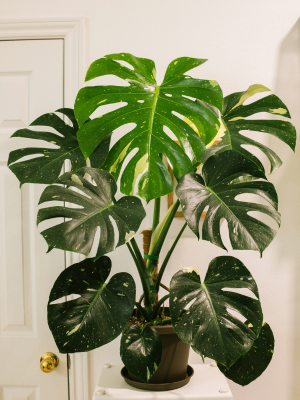
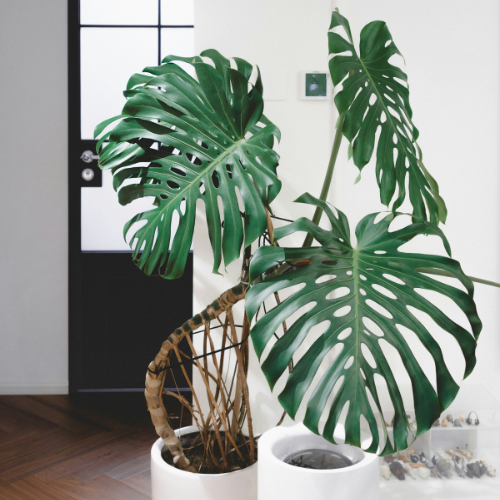
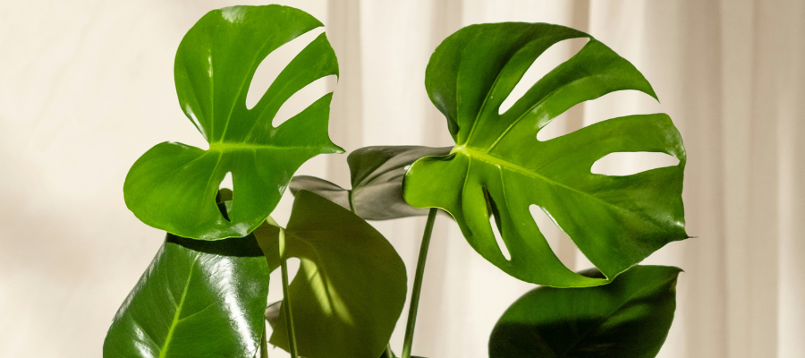
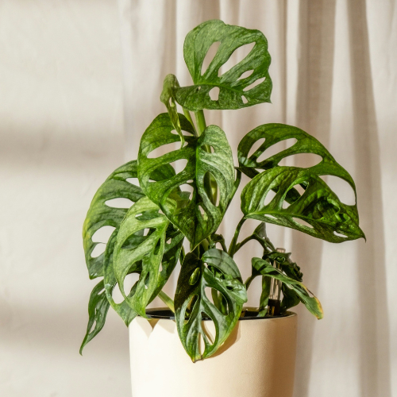
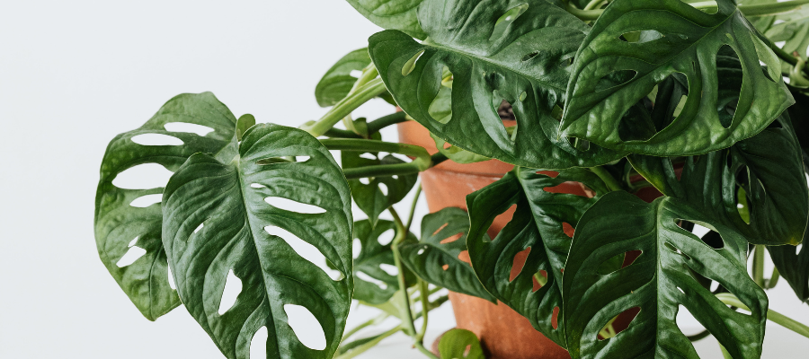
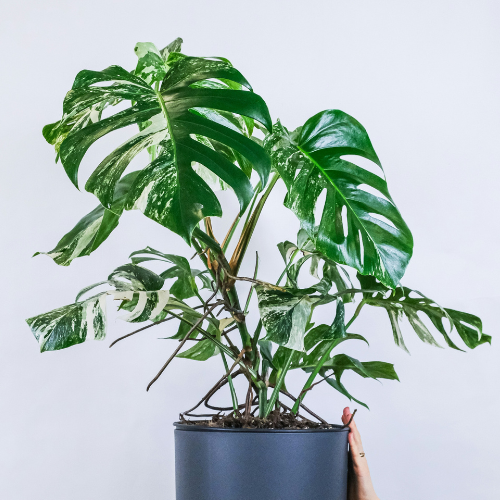
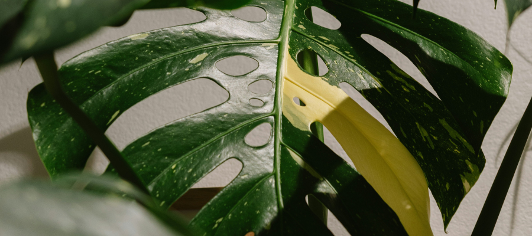

All You Need to Know About Monstera (3 Types + Care Guide)
Updated: __ April 2026
💡 This post may contain affiliate links. As an Amazon Associate, I earn from qualifying purchases - at no extra cost to you. I do the research so you don’t have to, and only recommend options that are reliable, good quality, and worth the price.
Monstera plants have become one of the most loved houseplants - and it’s easy to see why. With their large, sculptural leaves and tropical feel, they instantly make any space feel more alive. Just one plant can completely change the atmosphere of a room, making it feel softer and more connected to nature.
Part of their popularity also comes from how versatile they are. Whether you prefer a bold statement plant or something lighter and trailing, there’s a Monstera that fits your space and style.
But not all Monsteras are the same. Some are perfect for beginners, while others need a bit more attention and the right conditions to thrive. In this guide, you’ll learn about the 3 most popular Monstera varieties, how they grow, and how to take care of them.
🌿 Quick Overview
- Best for beginners: Monstera Deliciosa
- Best for small spaces: Monstera Adansonii
- Best for aesthetics: Monstera Albo Variegata
1. Monstera Deliciosa (Swiss Cheese Plant)

The Monstera Deliciosa is the classic variety most people recognize. Its large, split leaves create that instantly lush, tropical look, but those splits (called fenestrations) are also functional - they allow light to pass through to lower leaves and help the plant withstand heavy rain and wind in its natural environment.
Native to Central American rainforests, Monstera grows by climbing up trees using aerial roots, attaching itself to surfaces as it searches for better light. This is why indoor plants behave differently depending on how they’re grown: a Monstera left trailing will often stay smaller with fewer splits, while one grown vertically on a moss pole can develop much larger, more mature leaves.
Indoors, its growth is strongly influenced by light and support. For example, a plant placed near a bright window with a moss pole can double its leaf size within a growing season, while the same plant in a darker corner may stay compact and produce solid (unsplit) leaves.
Key facts:
- Can grow up to 2 - 3 meters indoors with proper support
- Develops splits (fenestrations) as it matures and receives enough light
- Produces aerial roots used for climbing and absorbing moisture
- In the wild, it produces edible fruit (rare indoors and requires ideal conditions)

Why people love it:
- Large, structured leaves create strong visual impact
- Fast growth in the right conditions (especially spring and summer)
- Adapts well to indoor environments compared to many tropical plants
- Works in both minimal and more layered interiors
Care tips:
- Light: Bright, indirect light (closer to a window = better growth)
- Water: Let the top 2 - 5 cm of soil dry out between watering
- Soil: Well - draining mix (potting soil + perlite + bark)
- Support: Use a moss pole or stake to encourage vertical growth
- Maintenance: Wipe leaves regularly to keep them dust - free
💡 Tip: If your Monstera has long stems with small, solid leaves, it’s usually reacting to low light or lack of support.
2. Monstera Adansonii (Swiss Cheese Vine)

Monstera Adansonii is a lighter, more delicate relative of Monstera Deliciosa, known for its smaller leaves filled with natural holes (fenestrations). Unlike Deliciosa, these holes appear early - even on young plants - because the leaf structure is naturally thinner and more flexible.
In its native tropical environment, it grows as a climbing vine, attaching itself to trees and spreading quickly across surfaces. Indoors, it behaves differently depending on how you grow it: when left trailing, it produces smaller leaves with more spacing, but when trained to climb (on a pole or wall), it can develop larger, more mature foliage.
Growth is fast under the right conditions. In bright indirect light with consistent watering, it can produce new leaves every 1 - 2 weeks during the growing season. It’s also one of the easiest Monsteras to propagate - cuttings with a node will root quickly in water, often within days.
Key facts:
- Fast - growing trailing or climbing vine
- Develops leaf holes early, even on younger plants
- Produces aerial roots for climbing
- Easy to propagate from stem cuttings
- Leaf size increases significantly when grown vertically

Why people love it:
- Lightweight, airy appearance compared to larger Monsteras
- Works well in small apartments and limited spaces
- Flexible growth - can trail, climb, or hang
- Quick growth gives visible progress
Care tips:
- Light: Medium to bright indirect light (more light = fuller growth)
- Water: Keep soil lightly moist but not soggy
- Soil: Light, well - draining mix
- Growth: Let it trail or provide support for larger leaves
- Humidity: Prefers moderate humidity but adapts to indoor air
💡 Tip: If leaves are small and widely spaced, it’s usually a sign of low light or no climbing support.
3. Monstera Albo Variegata (Variegated Monstera)

The Monstera Albo Variegata is one of the most sought - after houseplants, known for its striking white and green leaves. The variegation is caused by a genetic mutation that removes chlorophyll from parts of the leaf, which is why each leaf develops a completely unique pattern.
Because the white areas can’t photosynthesize, the plant produces less energy overall. Albo may take significantly longer to push out a new leaf, it’s slower, less predictable, and more sensitive to conditions than regular Monstera Deliciosa.
Variegation is also unstable. Some plants may produce more green leaves over time, while others can push out heavily white leaves. Fully white leaves look striking but are not sustainable long - term, as they don’t contribute energy and often brown or die off faster.
Key facts:
- Variegation is caused by a lack of chlorophyll (genetic mutation)
- Slower growth due to reduced energy production
- Each leaf develops a unique pattern
- Produces aerial roots and climbs like standard Monstera
- Variegation can change over time depending on light and genetics

Why people love it:
- Highly decorative and visually unique
- Each plant looks different
- Strong focal point in minimalist interiors
- Considered a collector’s plant
Care tips:
- Light: Bright, indirect light (essential to maintain variegation)
- Water: Let the top layer of soil dry slightly between watering
- Soil: Chunky, well - draining mix (soil + bark + perlite)
- Pruning: Remove fully white leaves or overly weak growth
- Support: Use a moss pole to encourage stronger, upright growth
💡 Tip: If your plant starts producing mostly green leaves, it usually needs more light - but if leaves turn fully white, consider pruning to encourage more balanced growth.
Which Monstera Should You Choose?
| Plant | Difficulty | Growth | Best For |
|---|---|---|---|
| Monstera Deliciosa | Easy ⭐⭐⭐⭐ | Fast | Beginners, statement plant |
| Monstera Adansonii | Easy ⭐⭐⭐⭐ | Fast | Small spaces, trailing |
| Monstera Albo | Medium ⭐⭐⭐ | Slow | Aesthetic, collectors |
Common Monstera Mistakes
❌ Not enough light → no leaf splits
Monsteras need bright, indirect light to develop mature leaves. In low light, the plant focuses on survival rather than growth, producing smaller, solid leaves without splits.
The easiest first step is moving your plant closer to a window - natural light is free and often all your Monstera really needs. But if your space doesn’t get much natural light (especially in winter), a small indoor grow light can make a big difference.
Some simple options you can try:
- Clip - on grow light (easy setup) - easy to set up, adjustable, and perfect for 1 - 2 plants. Beginner and budget - friendly.
- Grow light bulb (more aesthetic) - blends into your room decor, doubles as soft ambient lighting, and keeps the “plant setup” look minimal.
❌ Overwatering → root rot
This is the most common issue. Monsteras prefer slightly drying out between waterings, and constantly wet soil can suffocate roots and lead to rot. Signs include yellowing leaves, soft stems, and a musty smell from the soil. Always check the top layer of soil before watering.
If you struggle with knowing exactly when to water, a moisture meter can be a helpful learning tool. Many people find them very useful and reviews are generally positive. However, some users report that readings can be misleading or that the meters stop working after a few months.
My advice: if you decide to get one, don’t rely on it completely - use it to understand your plant’s watering needs. Over time, you’ll be able to tell when to water just by feeling the soil, lifting the pot, and observing your plant.
❌ No support → smaller leaves
Monsteras are natural climbers. Without a support like a moss pole or stake, they tend to sprawl outward or trail, which can result in smaller, less mature leaves. Giving your plant vertical support mimics how it grows in nature and helps it produce larger leaves with more splits - the kind we all love to see.
In their native rainforests, Monsteras climb up tree trunks using aerial roots. A moss pole gives them a surface to grab onto and climb, which encourages vertical growth, bigger leaves, and more splits. A plain stake will still support the plant’s weight and help it grow up, but it won’t provide the same moisture and anchoring benefits that a moss pole does. If you want the fastest maturation and most dramatic leaf fenestration, a moss or coir - covered pole is your best bet.
Some good options for support:
- Classic Moss Pole – a plastic pole filled with sphagnum moss, giving your Monstera plenty of surface for aerial roots to grip as it climbs. Ideal for rapid attachment and vertical growth.
- Coir Moss Stick / Coconut Fiber Support – natural, eco - friendly coconut fiber wrap around a sturdy stick. Encourages roots to anchor naturally, with a slightly rougher texture that mimics tree bark. Great for long - term support and sustainable styling.
- Trellis - Style Support Frame – open, decorative structure that allows your Monstera to climb in a more natural, spread - out pattern instead of a single vertical pole. Adds architectural interest to your plant display.
For attaching your plant to the support, you can simply use any string you have at home or try this popular, reusable Velcro tape. It gently secures the stems without damaging them and is easy to adjust as your plant grows.
Tip: Start support early, before your plant gets heavy, and loosely tie stems as they grow up the pole. That way the plant learns to climb and will direct more energy into stronger, larger leaves over time.
❌ Dusty leaves → reduced growth
Dust buildup blocks light from reaching the leaf surface, reducing photosynthesis. Over time, this can slow growth and make your Monstera look dull. Wiping leaves occasionally with a damp cloth keeps them healthy and allows the plant to use light more efficiently.
You can use any soft microfiber cloth - there’s no material proven to be better - but if you want a convenient option, these microfiber gloves are very popular. People love them for their comfort and how easy they make cleaning large leaves, especially for tall or sprawling Monsteras.
Simple Tips for Success
✅ Start with one plant → learn its rhythm
Every space is different. Begin with one Monstera and observe how it responds - how fast the soil dries, how often it grows, and how it reacts to light.
✅ Watch your light → better growth
Pay attention to how light changes during the day. A spot that seems bright in the morning might be too dark later, which affects leaf size and growth.
✅ Avoid overwatering → healthier roots
This is the most common mistake. Let the top layer of soil dry before watering to prevent root rot and keep the plant stable.
✅ Be consistent → let the plant adjust
Monsteras don’t like sudden changes. Give your plant time to adapt before moving it or changing your care routine.
Final Thoughts
Monstera plants can bring a calm, natural feeling into your home. With the right setup, they’re also surprisingly adaptable, even outside of ideal “tropical” conditions.
As you’ve seen, the main differences between varieties come down to growth style, light needs, and maintenance level. A Monstera Deliciosa is a strong, beginner - friendly choice if you want a statement plant. Adansonii works better for smaller spaces or shelves, while variegated types require more attention but offer a unique visual payoff.
The key is not to aim for perfection, but to match the plant to your space and routine. Pay attention to where the light hits during the day, avoid overwatering, and give your plant support if it needs it. Small adjustments like these make a bigger difference than trying to follow strict rules.
Start simple, stay consistent, and let your plant adapt to your environment.